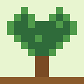

พรรณไม้ไทย
พรรณไม้ไทย
Edible Plants
ชะอม – Cha-om (acacia shoots)
Senegalia pennata
Feathery fence-side shoots with a strong smell.
View details
Senegalia pennata
Feathery fence-side shoots with a strong smell.
View details
Capsicum frutescens
Tiny, very hot chilies behind many Thai dishes.
View detailsWash plants well, cook shoots and roots when a recipe says so, and start with small portions of new foods.
Only eat plants you can identify for sure. Some plants look alike, and some are not safe raw. Ask a teacher, a parent or a local expert if you are unsure.
Try holy basil, turmeric and butterfly pea from the herbal page.